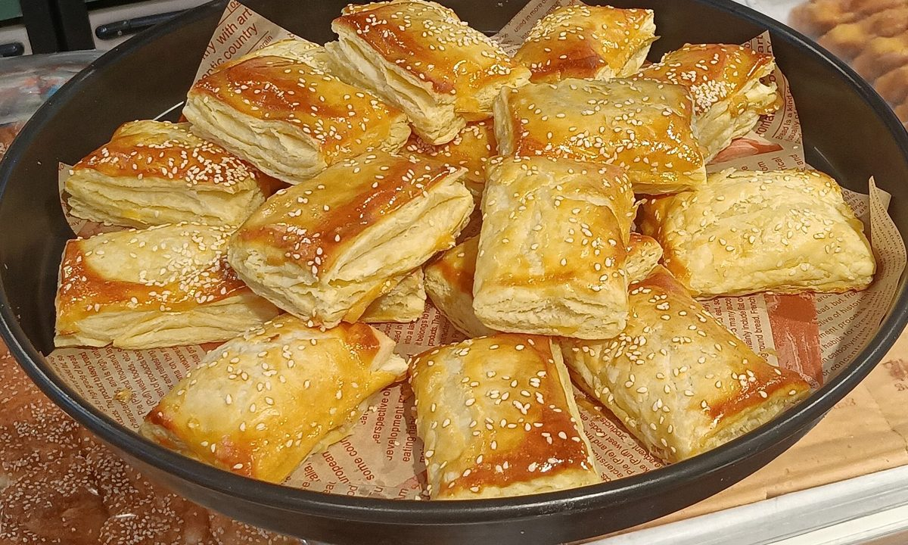
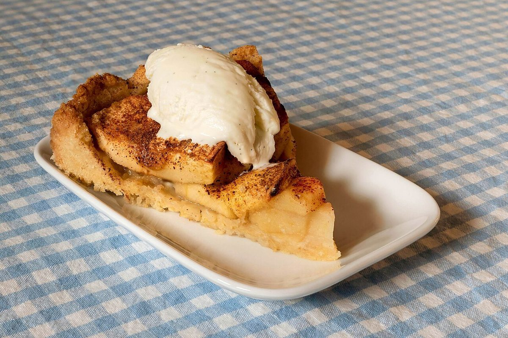
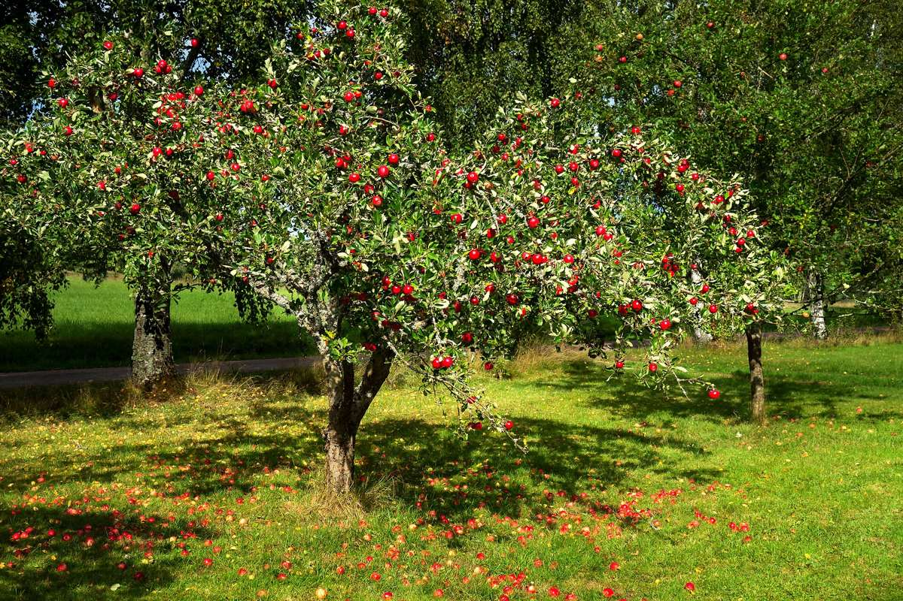

制作側の連想
ピンチハンガーの部位を、配置図にしてみる
このサイトは、物干しにつるすピンチハンガーを図にしてみました。六つの部位に番号をふり、上の図と並べています。制作側の連想で、お店の理念・由来とは無関係です。実際の製品の仕様を示すものでもありません。
凡例
六つの部位
- 1フックハンガーを竿にかけるための、上についている曲がった吊り手。
- 2ハブフックの下で、放射状の腕をひとつに束ねる中央の部分。
- 3アームハブから外側へ広がり、外枠を支えている細い腕。
- 4外枠リングアームの先をぐるりとつなぐ輪。ピンチを並べる土台になる。
- 5ピンチ外枠から下がる、物をはさむための洗濯ばさみ。
- 6ばねピンチの中にあり、口を閉じる力をつくる小さな部品。
ギャラリー(イメージ)
パイと焼き菓子の写真





写真はパイ・リンゴ・パン・コーヒー豆などのイメージです。お店のものではなく、お店で提供している商品を示すものでもありません。
ご案内
お店のこと(確認できたものだけ)
| 所在地 | 〒995-0017 山形県村山市楯岡十日町４−３４ |
|---|---|
| 電話 | 準備中 |
| 営業時間 | 準備中 |
| 定休日 | 準備中 |
| ご予約 | 準備中 |
| 駐車場 | 準備中 |
| SNS | Instagram @syougetudonunokawa |